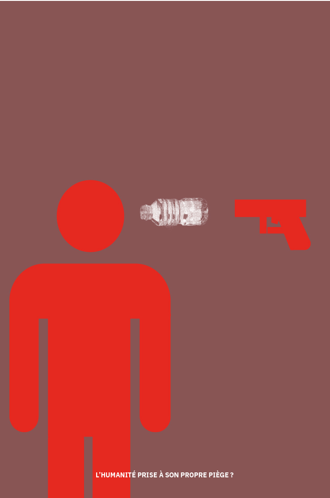

La Recyclerie
DESIGN MESSAGE/ mise en page - indesign - illustrator
[2024]
Le projet visait à la création d’affiches pour la REcyclerie, une gare réhabilitée en lieu de vie ayant des valeurs écologiques fortes. À l’issu d’écoute de plusieurs podcasts sur la plateforme «La REcyclerie », une phrase clé m’a permis d’expérimenter divers principes. La citation choisie a été «L’humanité prise à son propre piège».
Cela a permis de questionner un retournement de situation, une embûche et surtout un «égocentrisme suicidaire». L’idée de prendre conscience de l’impact de la surproduction a permis de questionner l’hors champs pour se sentir minime. D’autres principes comme l’idée de dénoncer notre propre perte ou encore éveiller les consciences sur l’insécurité alimentaire a permis d’expérimenter le principe de métamorphose ou de transformation. Que ce soit d’humains ou de biens. Les principes de combinaison, juxtaposition ou encore confrontation d’un visuel pictographique et photographiques ont été des contraintes permettant une richesse et un contraste visuel important lorsque la série d’affiche se tient côte à côte.
